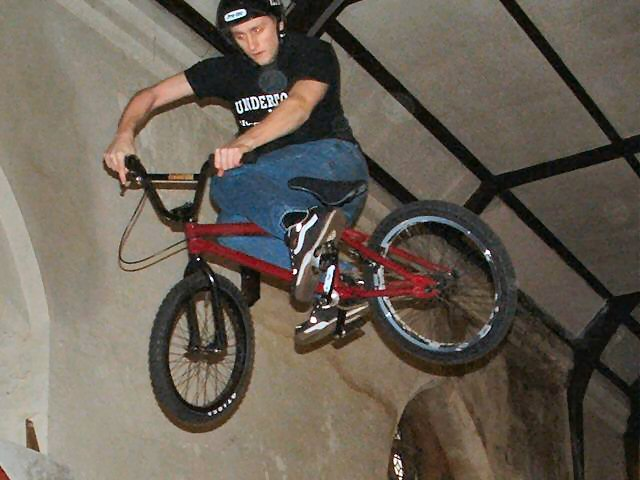
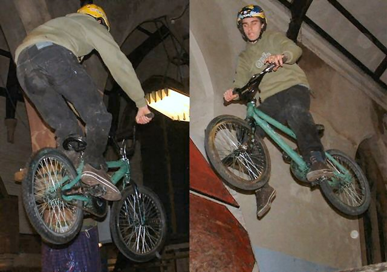
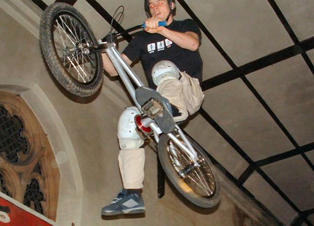
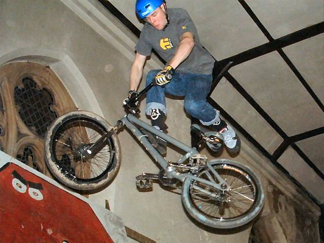
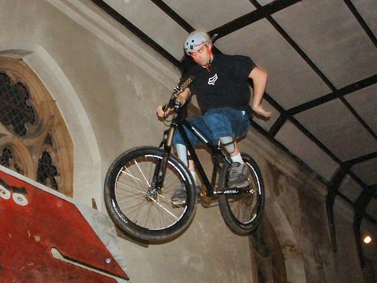
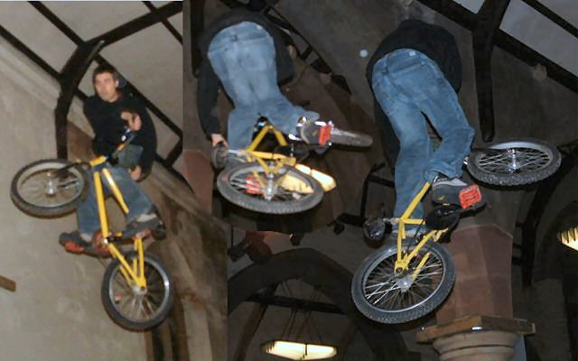
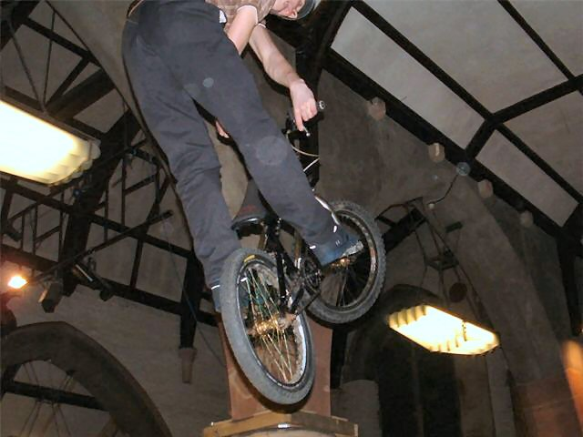
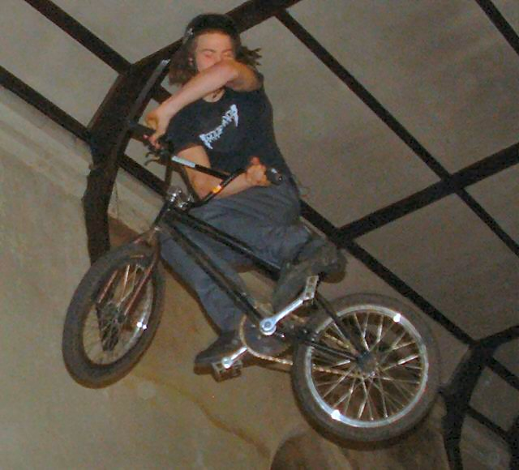

 becky took most of these pictures. she's getting better at taking pictures. this is a strange trick. maybe a lookback attempt. i don't know. it looks good like that i think. Rebekah: this strange trick is actually called a broken-leg-nearly-fall-off because it looks like he has a broken leg and is going to fall off. I don't think he did fall off though. |
 sebs first trip to skaterham and first time riding in about a month. little one foot there. Rebekah: Here is a wet bum and a groin strain. He looks like he's about to land on the cross bar. |
 another one footer. these have to be the easiest tricks to do. except turnbars. i like the angle of this picture. i like it when you can see the bottom of the shoe. Rebekah: This is actually a groin strain not just a one footer. |
 tailwhip to the pedals first time gimp. Rebekah: Here is a flying back-wiggle. |
 bit of a camp one hander. this guy was friendly though. he was trying no handers but i'm not sure he got them down. there were two mountain bikes there on the box. i want to see them do the street course. |
 my tables/ turndown attempts. the tables are getting there, but it's still hard to get my knee over. i can't relax my legs. turndowns are strange. i need to kick my legs more. Rebekah: Here is Ben doing some tricks. I think the middle one makes him look a really feminine shape! |
 good x good picture. Rebekah: Here is a straight-legs-with-handlebar-twist. |
 indown. had this guy been drinking? he was very chattery and if you look at the other pictures. he had a wet bum. Rebekah: I kept missing this guys tricks, but here's one where the timing was better. It is a screw-body. |